Pesquisa & Inteligência de Mercado · Uso do Time Comercial
Costa Dourada
Litoral Catarinense
Itapema, Porto Belo & Balneário Camboriú — território, preço, indicadores macroeconômicos 2021–2026 e projeção de mercado até 2031.
A região que mais valoriza no Brasil está no seu quintal
Santa Catarina cresce acima da média nacional há três anos consecutivos. O eixo Itapema–Porto Belo–Balneário Camboriú concentra o epicentro dessa expansão.
Fontes: IBGE, SEPLAN-SC, FipeZap, DWV Inteligência de Mercado, Prefeituras de Itapema e Porto Belo.

Conectividade Itapema & Porto Belo
Acesso aéreo em três camadas — internacional, regional e privado — mais BR-101 direta aos principais polos turísticos e industriais de SC.
Aeroporto Internacional — voos diretos para SP (GRU/CGH), Rio de Janeiro, Brasília e destinos internacionais.
Aeroporto comercial mais próximo da região — voos regulares para São Paulo e outros destinos.
Aeródromo privado — táxi aéreo e helicóptero, pista de 1.195m.
Conexão direta com Beto Carrero World (Penha, ~48 km) e Blumenau/Oktoberfest (~75 km).
Polo industrial e turístico — Oktoberfest, um dos maiores eventos do gênero fora da Alemanha.
Nova Trento, SC — santuário da primeira santa brasileira, destino de turismo religioso.
Fontes: ANAC, Infraero, Google Maps. Distâncias aproximadas a partir de Itapema/Porto Belo — Blumenau e Santuário Madre Paulina não confirmados de forma independente nesta rodada.
Itapema ultrapassa Balneário Camboriú pela 1ª vez
Em junho de 2026, o FipeZap registrou uma virada histórica: Itapema assumiu a liderança nacional de preço por m² residencial.
Fonte: FIPE — Índice FipeZap, jun/2026. Porto Belo: R$14.712/m² — preço médio das unidades vendidas no 1º semestre de 2026, DWV Inteligência de Mercado; metodologia distinta do FipeZap (transações, não anúncios), não estritamente comparável às demais cidades.
Infraestrutura e demanda sustentando o ciclo
BR-470
85% executadaDuplicação de 73 km ligando o litoral ao Oeste catarinense — R$ 1,7 bi investidos.
BR-101
R$ 9 bi de retornoPontes e marginais destravando os gargalos entre BC, Itajaí e Navegantes.
It!Wheel Itapema
2º sem. 2026Roda-gigante turística, R$ 50 milhões investidos — novo vetor de fluxo na orla.
Absorção regional
203+ construtoras47 novas incorporadoras entraram na região entre 2024–2026. Itapema vendeu 9.089 unidades desde 2020 (~R$10 bi).
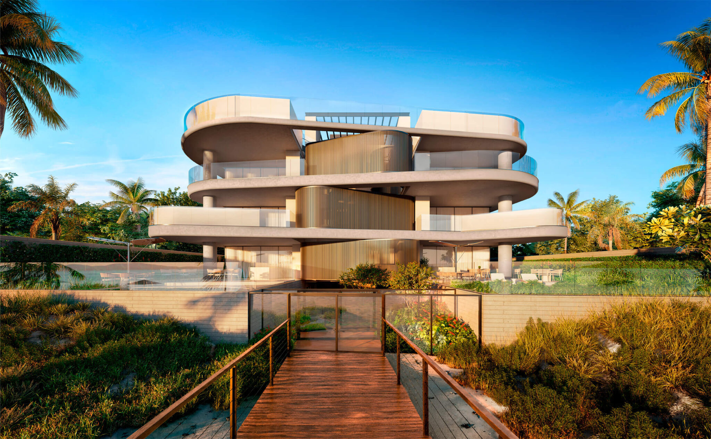
ENÁ · Praia do Estaleiro, Balneário Camboriú15 anos construindo o litoral catarinense
Fundado em 2011 por Thiago Cabral e Abelardo Benigno, o Grupo une duas frentes: ABC Empreendimentos (edificações verticais) e Embralot (loteamentos e bairros planejados). Auditoria independente, certificação ODS 15 e compromisso ativo com a LGPD.
Faturamento aproximado de R$ 600 milhões, crescimento de 150% em 12 meses (Revista Exame). Parceiros de projeto: Studio Arthur Casas, Triptyque Architecture, Fernanda Marques, Burle Marx.
O Grupo ABC.inc & Embralot
Vídeo institucional do grupo, narrado em português.
Diretoria Executiva
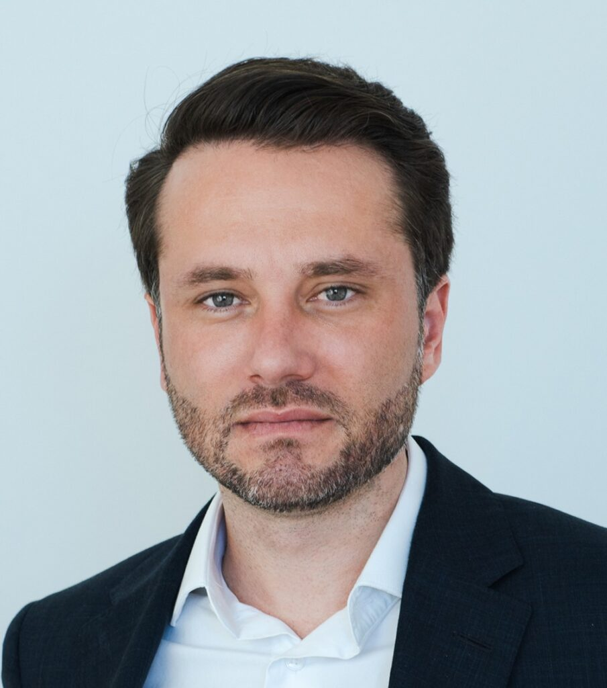
Thiago CabralCEONo mercado imobiliário desde os 16 anos, em Itapema. Consolidou o grupo entre as principais construtoras do Sul do país.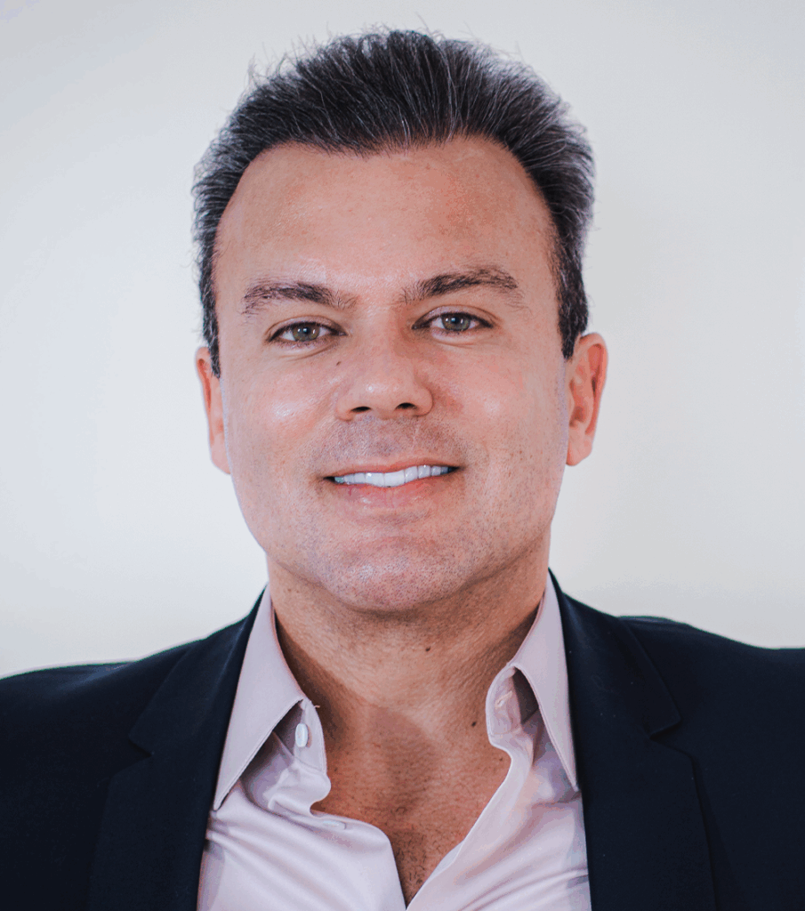
Abelardo BenignoSócio-fundador & Co-CEOGestão administrativa e operacional, foco em eficiência, governança e sustentabilidade.- Dr. Caio PerroneJurídico, Pessoas e GovernançaAdvogado, especialista em Direito Imobiliário pela FGV Law SP; membro do IBRADIM. Foco em solidez jurídica, gestão de pessoas e governança corporativa.
- André ReisMarketing e Comercial+15 anos em construção civil; especialista em CRM, vendas e posicionamento de marca.
- Marcelo MidouxFinanceira+20 anos em finanças e controladoria, com passagem por uma das Big Four (PwC). Planejamento financeiro, automação de processos e gestão de equipes.
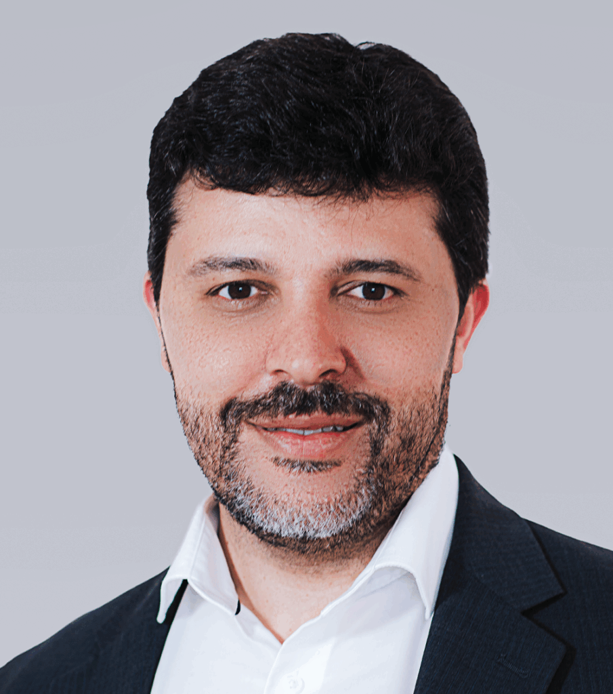
Ricardo Rocha LealIncorporação+20 anos, +150 empreendimentos entregues no Brasil. Autor de 5 livros, professor de MBA.
ABC Empreendimentos
Edificações verticais de alto padrão — do lançamento à entrega.
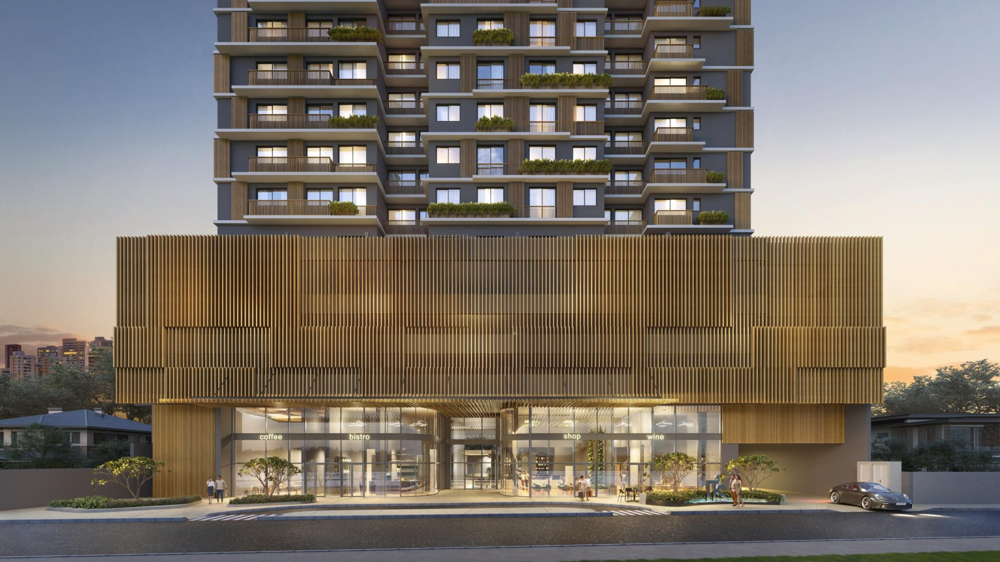
It's All Right
Ená
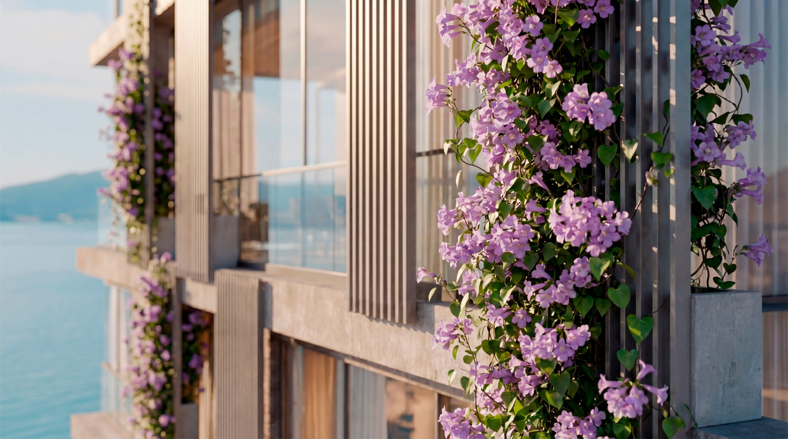
Vitreo 271
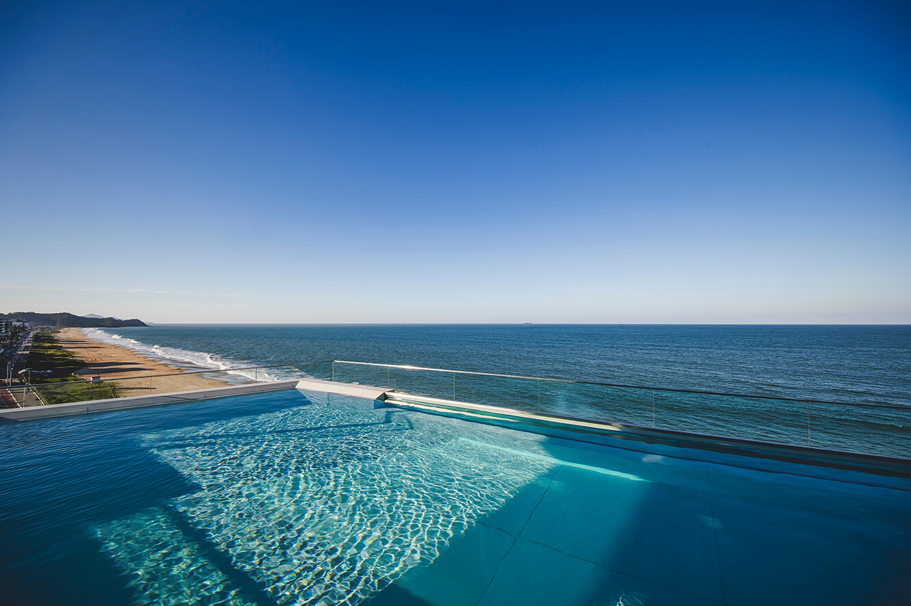
Bravo Residences
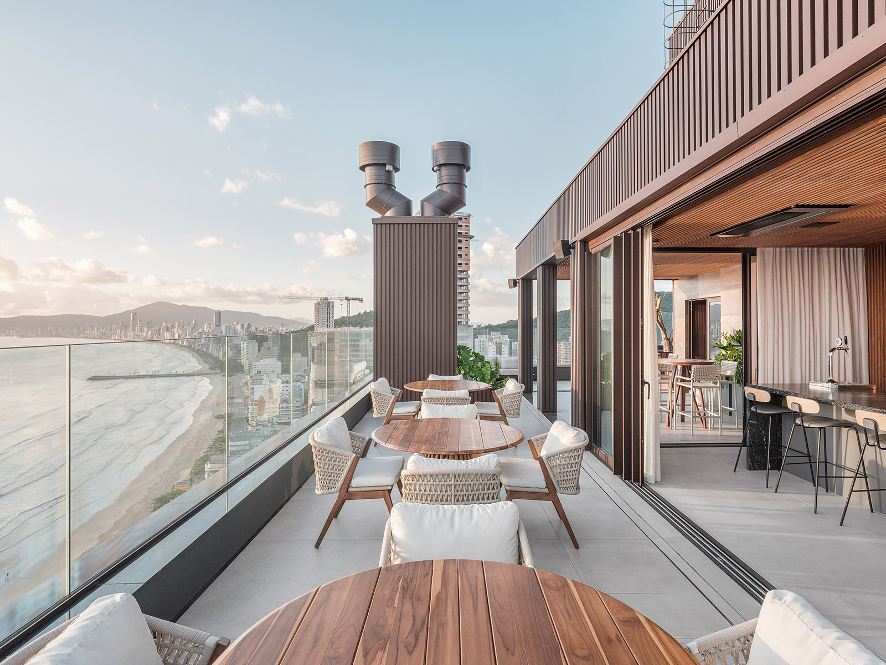
143 Mayfair
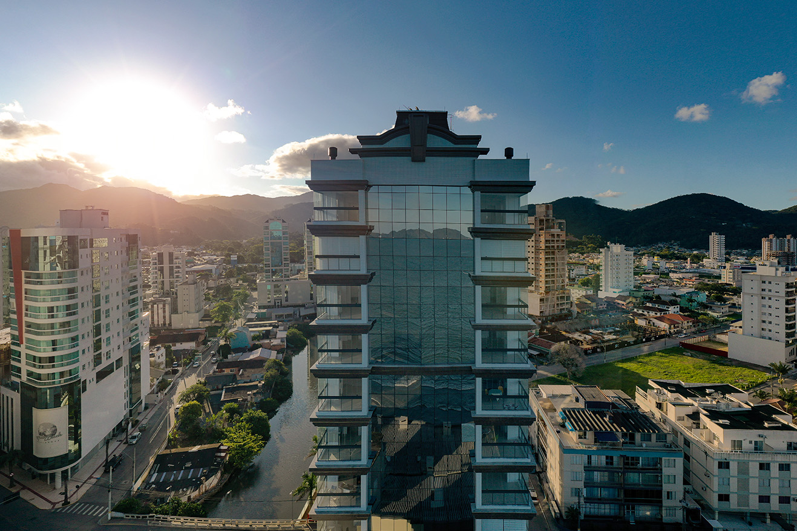
Marina View
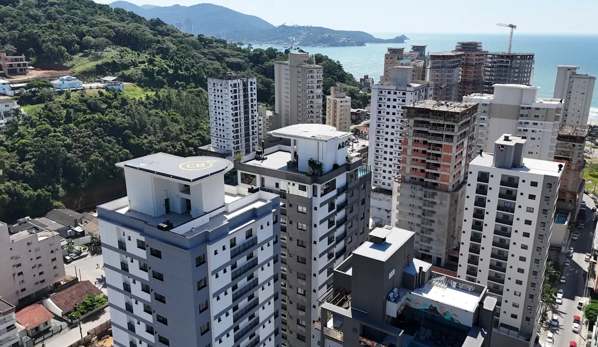
Torres do Caribe
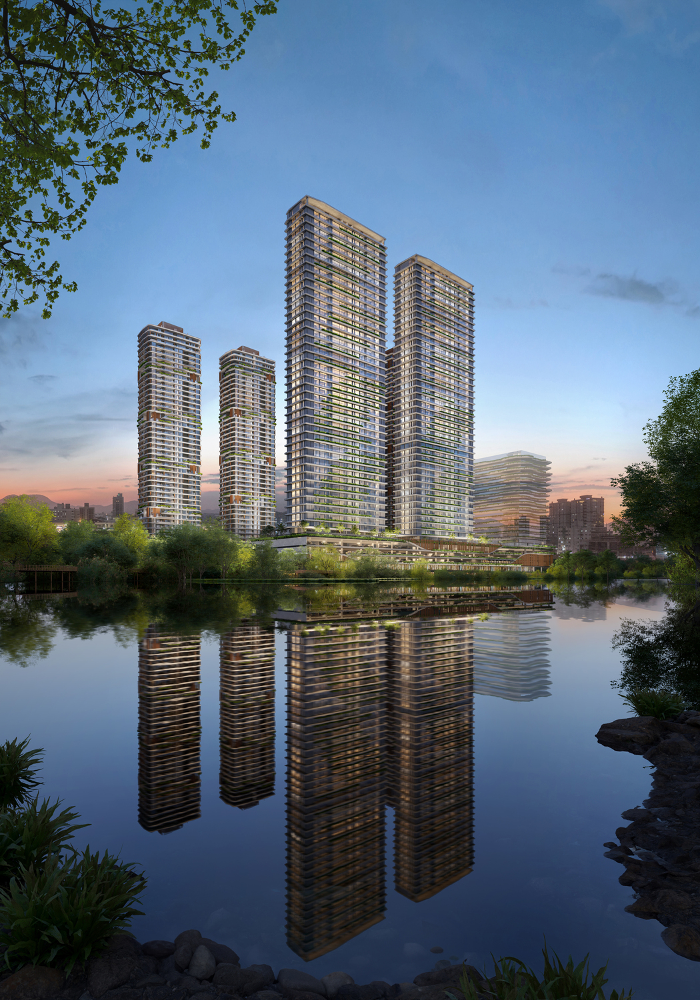
Lagom Perequê
Bravo Residences: assinado por Studio Arthur Casas, 6 unidades exclusivas (1 por andar) — ≈R$84,8 mil/m². Demais unidades sob consulta comercial.
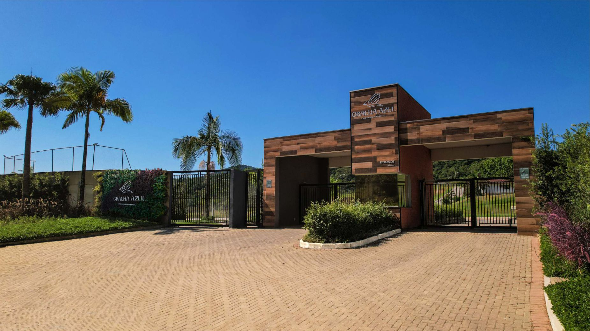
Embralot
Loteamentos, bairros planejados e complexos multissetoriais.
Colinas de Camboriú
Navepark
Gralha Azul
ABC Business Park
Ecoville
Quem disputa o litoral catarinense
Mercado fragmentado e em forte expansão — os 6 concorrentes diretos mais relevantes em Itapema, com benchmark de preço real.
Estimativas de portais especializados (Lançamentos Itapema, Lançamentos Porto Belo) — não há, até esta apuração, contagem oficial publicada por Prefeitura, Sinduscon ou CRECI-SC.
| Incorporadora | Posicionamento | Benchmark de preço | Absorção/Escala |
|---|---|---|---|
| ARS Kammer Desde 2005 | Alto padrão · 18 empreend. (2012–32) | R$990mil–R$14,0mi/un. | 16 entregues · land bank até 2035 |
| Gessele Desde 2012 | Ultra-luxo · Charles II (torre 252m, 70 and.) | ~R$23–24 mil/m² | A partir de R$5,19 mi/un. |
| Dallo Desde 2008 | Alto padrão · Itapema, BC, Cascavel-PR | R$2,0–3,3 mi/un. | 44 lançados · 31 entregues · 15 em obras · +1.600 aptos |
| H.Santos Desde 2013 | Entregas antecipadas · Piazza San Marco | R$14–15 mil/m² (R$20 mil/m² frente-mar) | 100% vendido antes da entrega · 6 obras simultâneas |
| Pasqualotto & GT Desde 1993 | Alto padrão a ultra-luxo · líder em Itapema (50+ prédios) · Yachthouse, Vitra, La Città by Pininfarina (BC) | R$2,49mi–R$10,89mi/un. | 55+ torres entregues · 300 mil m² construídos |
| MayBelly Desde 2010 | Alto padrão · Costa Esmeralda (Porto Belo/Itapema) · pioneira na verticalização de Porto Belo | R$9,3–11,7 mil/m² | 12 entregues (até 2024) · 8 em obras · entregas antecipadas em até 2 anos |
H.Santos: faturamento +63% (2021) · +65% (2022) · +56% (2023); Piazza San Marco valorizou +100% em 5 anos. Fontes: sites institucionais, MySide, NSC Total.
Como o imóvel se compara às demais classes de ativo
Variação anual de cada indicador, 2021–2026 (parcial) — um gráfico por ativo, para ver a tendência de cada um sem cruzar linhas.
2026 parcial (até agosto). Barra em preto = ano mais recente. Fontes: Dados de Mercado (IPCA), Brasil Indicadores (Poupança), B3 (Ibovespa), Banco Central (Dólar).
Itapema como referência: +114% em 5 anos
Valorização acumulada, cada ativo no seu período real — Itapema lidera até mesmo à frente do CDI, o benchmark mais forte da renda fixa nos últimos anos.
Itapema: R$6.890/m² (jun/2019) → R$12.962/m² (jun/2024), +114% — Índice FipeZap, relatório oficial FIPE jun/2024 (PDF), conforme noticiado por Lance Itapema. Balneário Camboriú: R$9.888/m² (mar/2022) → R$15.228/m² (jun/2026) — RealPioneiro. CDI acumulado 2021–2026: 4,42% · 12,39% · 13,04% · 10,88% · 14,32% · 8,14% (parcial). CDB típico rende 100–110% do CDI. Porto Belo: projeção de cenário base, não garantia de rentabilidade. Fontes: B3, Banco Central, FipeZap.
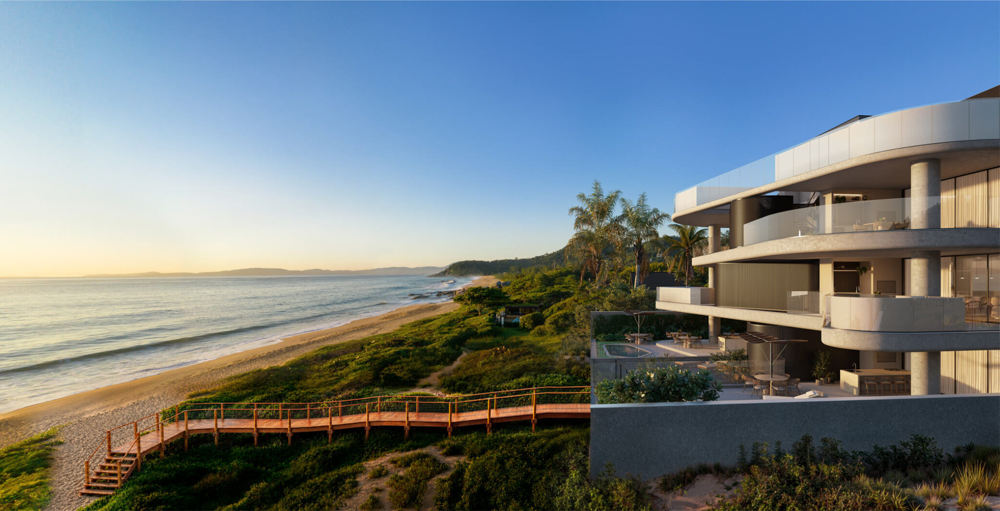
ENÁ · Praia do Estaleiro, Balneário CamboriúPorto Belo é a próxima fronteira de valorização
Porto Belo desponta como a nova fronteira de valorização do litoral catarinense, num ciclo de crescimento que já desperta interesse em escala nacional — impulsionado por infraestrutura, turismo e novos negócios em múltiplos setores. Para o investidor de olhar atento, é a janela de posicionamento antecipado num mercado com potencial real de escalada patrimonial. Cenários sustentados por: novo Plano Diretor, ampliação do porto de cruzeiros, avanço da BR-470/BR-101 e migração de investidores de Itapema e BC — estimativas de mercado, sujeitas a variação.
Crescimento estrutural, não especulativo
4,6% do PIB Nacional: participação crescente de SC — IBGE 2022 (última apuração oficial disponível). 30ª Cidade + Cresce Brasil: Ranking IBGE · Censo 2022.
Porto Belo quadruplicou sua população em 3 décadas (6.955→27.688 hab., hoje ~32 mil). Balneário Camboriú saltou de 139.155 (2022) para 151.674 hab. estimados em 2025. Turismo em SC cresceu 9% em 2024 — quase o triplo da média nacional. PIB catarinense: +5,3% em 2024, 6º maior do Brasil.
Ocupação hoteleira · BC · fevereiro
Recorde de 5 anos em fev/2025 (89,61%). Fonte: PANROTAS.
Conheça nossos Empreendimentos
Conteúdo 01
Conteúdo 02
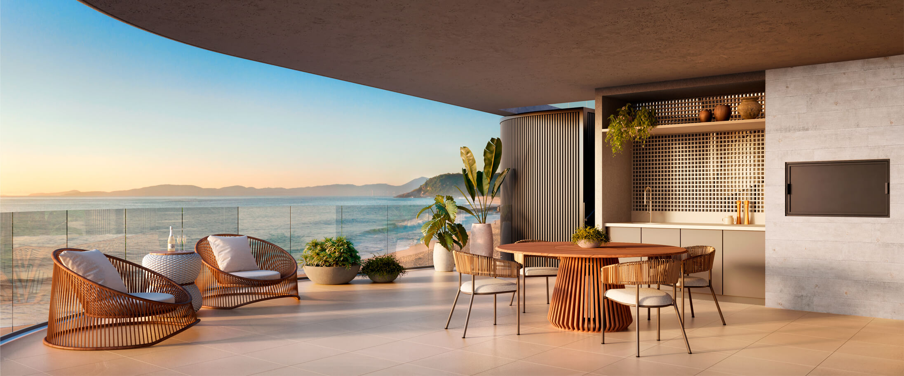
Terraço gourmet com vista mar · empreendimento ABC.incABC.inc — onde sua experiência começa
- 01Exclusividade comprovada por dado.Itapema é hoje o m² mais caro do Brasil.
- 02Pipeline garantido.12,4 milhões de m² em land bank, 2.200 unidades já entregues.
- 03Porto Belo como entrada.Projeção de valorização de até 64% até 2030.
- 04DNA de produto autoral.Studio Arthur Casas, Triptyque, Fernanda Marques.
- 05Região acima do país.PIB de SC +5,3%, turismo +9% em 2024.
- 06Segurança jurídica.Auditoria independente, governança formal, LGPD.
Fale com o Grupo
- Endereço
- Av. Nereu Ramos, 544 — Centro, Itapema/SC
- Telefone
- (47) 3360-6533
- contato@abcembralot.com.br
- Redes
- ABC.inc & Embralot